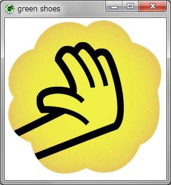

The Green Shoes Manual 1.0.331
Image
画像（image）はPNG、JPEGまたはGIFフォーマットの画像ファイルです。 Green Shoesは画像をリサイズまたはテキストとともにそれらをフローすることができます。 
画像を作成するために、スロット内部でimageメソッドを利用します：
Shoes.app do
para "Nice, nice, very nice. Busy, busy, busy."
image File.join DIR,
"../static/shoes-manual-apps.png"
end
Green Shoesに何らかの画像をロードしたとき、それはメモリにキャッシュされます。 それは、同じファイルの画像の要素をたくさんロードした場合でも、それは実際には １回だけファイルをロードすることを意味します。
webのURLを直接利用することもできます。
Shoes.app do
image "http://is.gd/c0mBtb"
end
webから画像がロードされたとき、それはハードディスクドライブとメモリの両方にキャッシュ されます。これは画像が変更されなければ再度ダウンロードをすることを防止します。 （不思議に思う場合：正にブラウザが行うetagのようにShoesは変更時間の軌跡を 保持します。）
注意: Green Shoesは、Red Shoesのようなハードドライブキャッシュ管理機能を サポートしていません。
Green Shoesはバックグラウンドでシステムのスレッドを使ってリモートの画像もロードします。 そのため、リモートの画像を利用することはRubyを妨げることはなく、またどんな強烈な グラフィカルな表示でも進み続けるでしょう。
画像全体のピクセルでの高さです。通常は、ピクセルでの画像の高さを知るために heightメソッドを利用できます。しかし画像がリサイズされていたり より大きいサイズなどにスタイルが設定されていた場合は、heightは変更された サイズを返します。
full_heightメソッドは保存されたオリジナルファイルの画像の（ピクセルでの）高さを与えます。
画像全体のピクセルでの幅です。widthではなくこのメソッドを使う理由の 説明についてはfull_heightメソッドを見てください。
画像のURLまたはファイル名です。
ファイルまたはURLからロードして、画像を他のものに入れ替えます。
画像をdegrees度回転させます。
Shoes.app do
img = image File.join(DIR, '../samples/cy.png')
img.move 200, 200
animate do |i|
img.rotate i*10
end
end
Next: ListBox